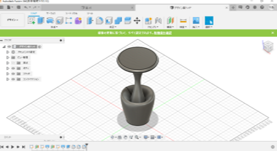
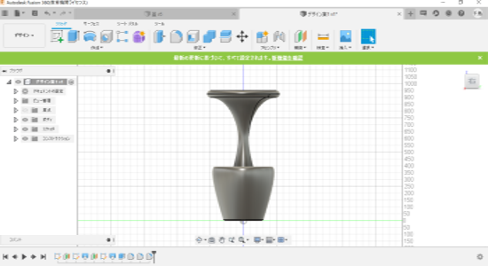

プランターのデザイン案を考えてみた。近代的な物をイメージして取り組んでみました。試作品などでは角ばったものを作ってきたが、丸みを帯びていた方がなんとなく近代的っぽい気がする。ということで全体的に丸みを帯びたデザイン案を考えることに。
横からみた図
イメージとしては、下部のくぼみの部分で植物を育てる。真ん中の柱を包むように植物が成長していく。また、渡辺君の水やりのためのホースを下部に取り付ける。上部は今まで自分が作ってきた試作品のような機能を取り入れる。
問題点としては、全体像を考えただけで機能をどこにどう取り付けるかを考えていないこと、土を入れるくぼみが浅いこと、真ん中の柱が光を遮ってしまう可能性があることが挙げられる。
作成にロフトとオフセット平面という機能を使用した。この動画の序盤が参考になった。